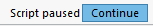

Print a Single Work Order
It is important to understand that the printed Work Order is the blueprint for constructing your custom frame job - it is not a customer-facing document.
-
The printed Work Order shows Work Order number, due date, dollar amount of the art and framing (you can hide prices), client name, dimensions, orientation, special notes and a barcode (the barcode helps you find the same order on the screen from the Find mode.)
-
The printed Work Order also displays more than what is on the Work Order screen, such as manual mat-cutter stop settings.
-
You may choose to have the footnote/disclaimer (see: Set up Document Footnotes) signed by the customer but the Work Order is to be left in the shop and not taken home by the customer. There are other better documents for them to take home.
-
A barcode lets you easily look-up a particular Work Order again on the screen.
-
The Work Order may be printed with or without vertical lines (Main Menu > Work Order > Options tab > More Options… > Print Options > Print Work Orders).
-
You can print as many copies as you need for your production purposes. As the order is completed, items can be checked off or notes written on the page.
-
Once the order is finished, use FrameReady to mark the Work Order as complete (under the Shop tab) and manually remove the required footage from inventory on the Frame detail screen. The paper copy can be placed sequentially into a binder for your archives (highest number on top) or recycled.
How to Print a Single Work Order
-
Go to the Work Order in question and click the Printer icon (top right).

You may also use the Print Documents sidebar button, then click the This Work Order button. -
A print preview of the document appears.
-
Click Save as PDF to save a PDF version to your Desktop or Documents folder.
-
To print, click the blue Continue button and then click OK in the print dialog.

Caution: Printing a Work Order with this method will not show if it is one of a group of Work Orders.
How to Set Print Options
© 2023 Adatasol, Inc.